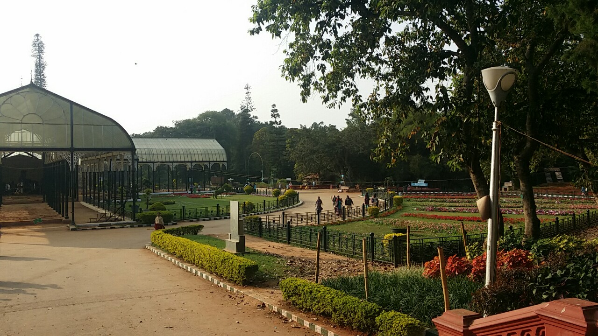

18기
18기

권보민
낯선 인도 땅에서 1년 동안이나 살아야 한다는 것은 기대감 보다는 걱정이 컸다. 인도 집에 도착했을 때는 걱정이 더욱 컸었다. 새벽에 택시를 타고 오는데 큰개 여러 마리가 짖으면서 택시를 따라왔고 다음날 밖에 나왔을 때는 인도와 차도의 구분이 없고 길에는 소가 자유롭게 걸어 다니고 있었다. 인도의 물가는 생각보다 싸지 않았고 인도의 물은 믿을 수 없어서 식당에 가서도 항상 미네랄 워터를 시켜야 했다. 하지만 살다 보니 적응이 되고 재밌는 경험도 많이 하고 있다. 마라톤에 참여하여 에이즈에 걸린 아이들에게 조금이나마 도움이 되고, 오빠들이랑 방학 때 고아에 가서 바다도 구경하고 맛있는 해산물도 먹고 왔다. 물론 사기도 당했지만 외국에 가면 더욱 조심해야 한다는 것을 배울 수 있었던 좋은 경험이라고 생각하고 있다. 수업을 들을 때 초반에는 영어를 못해서 못 알아 들어서 이해를 못하고 어려운 점이 많았지만 영어로 수업을 듣고 과외를 하면서 수업도 예전보다 더 많이 이해할 수 있게 되었다. 지금은 좋은거 반 나쁜거 반이지만 인도에서 한국으로 돌아갈 때는 아쉬움이 컸으면 좋겠다.